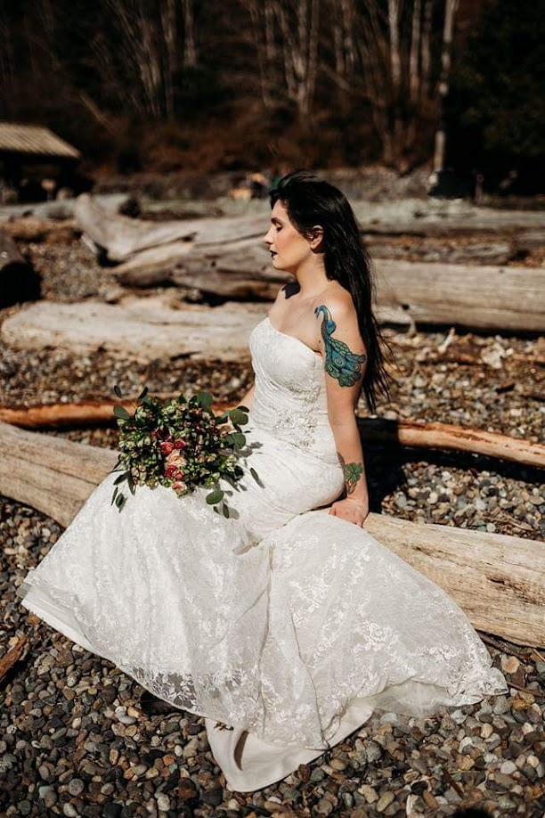
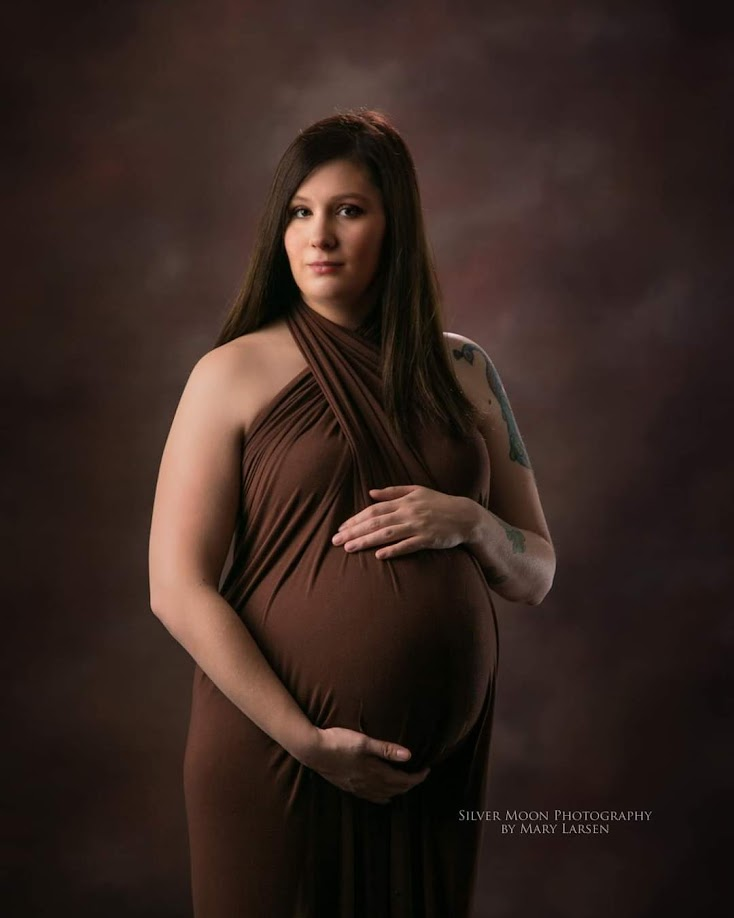
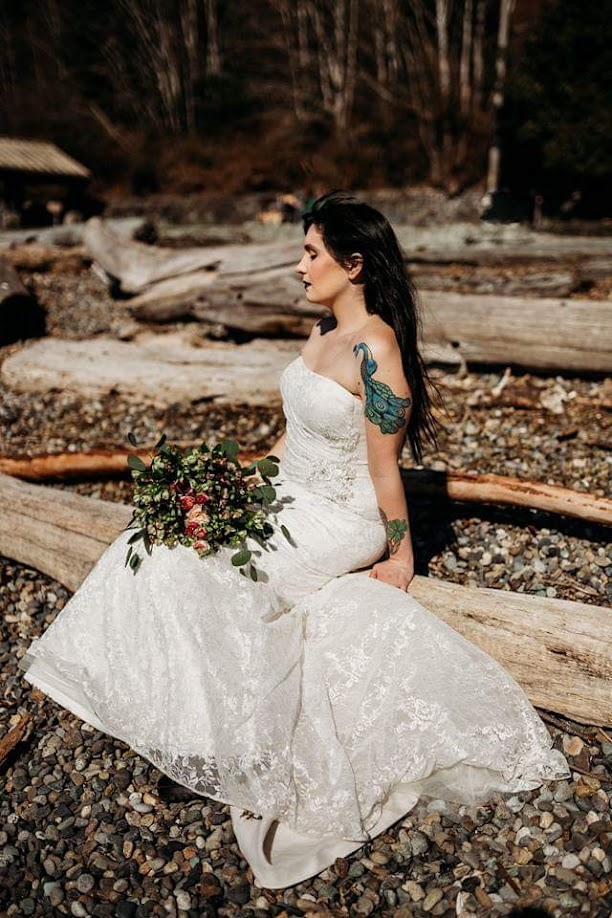
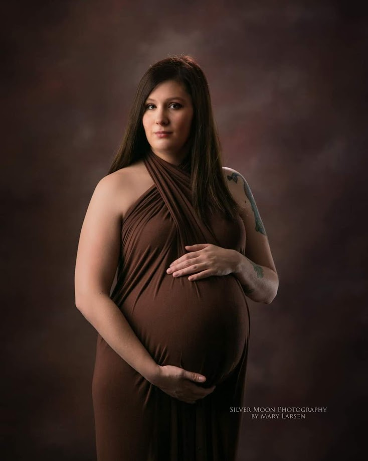
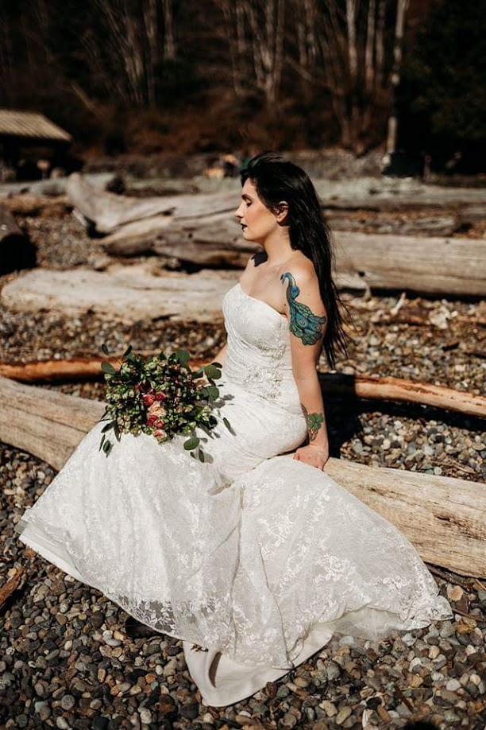
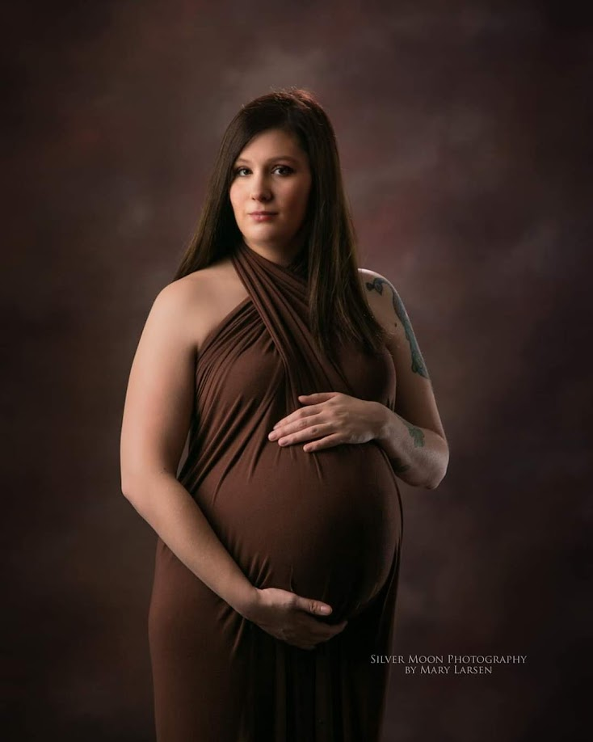

Skip to content
You said:
fix this code to be pretty again.
Celeste Greene
Hey, I'm Celeste ✨
Alt-chic. Business-forward. A little vintage, a little bold.
I’m blending vision, tech, and style to tell my story — and empower others to do the same.
About Me
I’m a creative strategist and operational powerhouse with a flair for the unconventional. My story weaves together e-commerce entrepreneurship, deep tech curiosity, and a passion for cultural aesthetics.
I’ve launched brands, studied systems, and managed teams — always with an eye for what’s beautiful *and* what works. My aesthetic leans soft grunge meets pastel power: think dreamy layouts, efficient flows, and magnetic storytelling.
Portfolio
Solar Glam
Thai skincare reimagined for Western markets — elegant packaging, high-converting product pages, and cultural authenticity.
In 2020, I was honored as a Beacon Class of 2020 recipient. The Beacon Student Program recognizes top cosmetology students in the country for their creativity and leadership.
My passion for learning extends beyond the classroom — I’ve spent years weaving advanced hair coloring techniques, texture work, and SFX makeup into my creative arsenal.
Modeling & Representation
I began freelance modeling in 2016, exploring expressive, inclusive, and editorial styles. Although I took a break due to mobility changes, I never stopped believing in the power of authentic representation.
My journey has included brand collaborations with Forever 21, A'Cherie Couture, and more — and I’m looking forward to what comes next. Disability doesn’t limit creativity, professionalism, or personal style.


My Disability Journey ü߆
Living with complex, chronic health conditions hasn’t stopped me from pursuing creative and strategic excellence — it's shaped my perspective and deepened my empathy.
From Ehlers-Danlos syndrome and POTS to Charcot-Marie-Tooth and invisible congenital birth differences, I navigate a medical landscape many don’t see — and still thrive in advocacy, creativity, and impact.
I support causes like Muscular Dystrophy Association and aim to use my voice for good. I’ve hiked the Appalachian Trail, traveled the globe, and refused to let mobility define me.
Travel & Humanity
I’ve explored cultures, crossed continents, and made it my mission to connect with people. I believe in the power of story, shared kindness, and lifting one another up — one collaboration, one act, one dream at a time.
My Global Footprints ✨
Visiting Thailand in July 2024 was a dream I carried in my heart for years — and it was everything I could have imagined and more. From the golden temples to the vibrant markets of Bangkok, from the tranquil beaches to the warm-hearted people, I felt like I had finally stepped into a world I belonged in.
Traveling there wasn’t just a vacation — it was a calling fulfilled. I laughed, I cried, I learned. And somewhere between the sunsets and the street food, I realized: I’m not just a wanderer, I’m a thinker, a dreamer, a problem solver. I’m really, *really* smart — and the world is mine to explore.
A magical peek into my Thailand journey üå∏
Istanbul: Dreams in Stone and Sky
Istanbul was a dream made real. I stood in awe beneath ancient domes I had only studied in books, and wandered through bazaars humming with life. I made lifelong friends, shared tea under lantern-lit skies, and networked with bold, brilliant souls reshaping Turkey’s future.
Wandering ancient paths and sparkling skylines üåô
Where should I wander next? üßö‚Äç‚ôÄÔ∏è
Let’s Collaborate
I welcome new ideas and meaningful work — let’s build something beautiful together.


 


